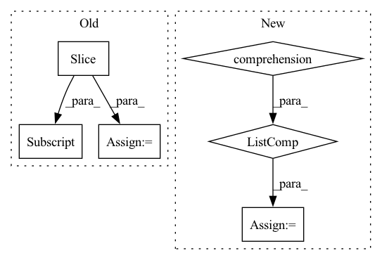

Pattern ID :21339
Before Change
proposals2 = proposals[1].bbox.size(0)
x1 = x[:proposals1]
x2 = x[proposals1:]
xz1, attn1 = self.z_dic(x1, dic_z, prior)
xz2, attn2 = self.z_dic(x2, dic_z, prior)
// a1 = self.causal_score(xz1)
// a2 = self.causal_score(xz2)After Change
dic_z = self.dic.to(device)
prior = self.prior.to(device)
box_size_list = [proposal.bbox.size(0) for proposal in proposals]
feature_split = x.split(box_size_list)
xzs = [self.z_dic(feature_pre_obj, dic_z, prior) for feature_pre_obj in feature_split]
causal_logits_list = [self.causal_score(xz) for xz in xzs]In pattern: SUPERPATTERN
Frequency: 3
Non-data size: 6
Instances Fragment ID: 68131471
Project Name: wangt-cn/vc-r-cnn
Commit Name: 51a882a36e8777715669773236cd8285b0d38986
Time: 2020-02-21
Author: wangt97@hotmail.com
File Name: vc_rcnn/vc_rcnn/modeling/roi_heads/box_head/roi_box_predictors.py
M Class Name: CausalPredictor
N Class Name: CausalPredictor
M Method Name: forward(3)
N Method Name: forward(3)
M Parent Class: nn.Module
N Parent Class: nn.Module
M File Name: vc_rcnn/vc_rcnn/modeling/roi_heads/box_head/roi_box_predictors.py
N File Name: vc_rcnn/vc_rcnn/modeling/roi_heads/box_head/roi_box_predictors.py
M Start Line: 96
M End Line: 123
N Start Line: 91
N End Line: 101
Before Change
selector.fit(self.train_features, self.train_labels)
self.rfe_feature_rank=selector.ranking_
df= pd.DataFrame(list(zip(self.feature_names, self.rfe_feature_rank.tolist())), columns=["Feature", "Rank"])
best_features_scores=df.sort_values(by=["Rank"], ascending=True)[:num_features]
best_features_names= best_features_scores.Feature.tolist()
best_features_table=self.feature_table[best_features_names+[self.label_column]]
return best_features_scores, best_features_names, best_features_table
After Change
self.selector.fit(self.train_features, self.train_labels)
self.rfe_feature_rank=self.selector.ranking_
df= pd.DataFrame(list(zip(self.feature_names, self.rfe_feature_rank.tolist())), columns=["Feature", "Rank"])
best_features_names= [x for x,v in list(zip(G.feature_names, G.selector.support_.tolist())) if v==True]
best_features_scores=df.sort_values(by=["Rank"], ascending=True)
best_features_table=self.feature_table[best_features_names+[self.label_column]]
return best_features_scores, best_features_names, best_features_table
Fragment ID: 68131466
Project Name: radtorch/radtorch
Commit Name: a4dccc68cb4935fe0222e31d045079d0523ea640
Time: 2020-04-11
Author: elbanan@users.noreply.github.com
File Name: radtorch/test.py
M Class Name: Feature_selection
N Class Name: Feature_selection
M Method Name: rfe(3)
N Method Name: rfe(4)
M Parent Class: Classifier
N Parent Class: Classifier
M File Name: radtorch/test.py
N File Name: radtorch/test.py
M Start Line: 171
M End Line: 179
N Start Line: 170
N End Line: 175
Before Change
token_length = len(y["text"].split(" "))
if y["ner"] == "DATE":
dates.append(y["text"])
index = len(all_text[:y["characterOffsetEnd"]] .split(" "))
if token_length < 2:
indices.append([index - 1])
else:After Change
text_len = len(text)
index = len(all_text[:idx].strip().split(" "))
replaced_text = " ".join(["*"*len(i) for i in text.split(" ")] )
indices.append(list(range(index, index + token_length)))
index += token_length
all_text = all_text[:idx + text_len].replace(text, replaced_text) + all_text[idx + text_len:]
for date_indices in indices:
date = "" Fragment ID: 68131461
Project Name: praneet9/representation-learning-for-information-extraction
Commit Name: e369e0fb493febe1b1a3ad69bcef2218109d1134
Time: 2021-02-21
Author: praneetbomma@gmail.com
File Name: utils/extract_candidates.py
M Class Name: AnonimousClass
N Class Name: AnonimousClass
M Method Name: get_dates(2)
N Method Name: get_dates(2)
M Parent Class:
N Parent Class:
M File Name: utils/extract_candidates.py
N File Name: utils/extract_candidates.py
M Start Line: 28
M End Line: 45
N Start Line: 29
N End Line: 46